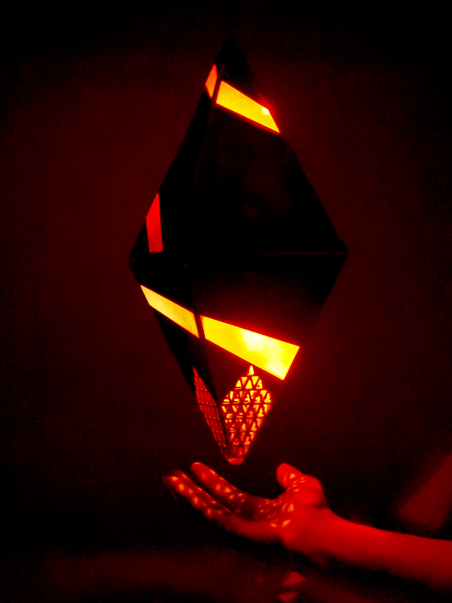
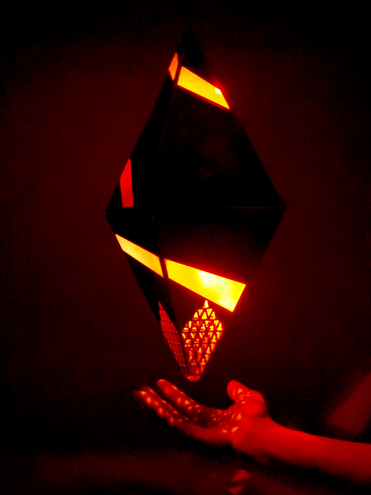

Sentry
Sentry is an interactive speaker designed to nudge people out of their daily routine by
bluntly presenting the ubiquitous and implicit social pressures around them.

It invades personal space by hanging at head level, uses a motion sensor to detect when people walk
nearby, flashes LED strips to get attention, speaks authoritatively with dual integrated
speakers, and retracts up and out of sight with a hidden winch system.

Implemented on the UC Berkeley campus, Sentry underscores our implicit submission to
capitalist values–specifically those having to do with the technology industry of the
Bay Area–by encouraging students to derive self-worth solely from their success in the tech scene.

Sentry was created with the help of Tiffany Tao and Felix de Rosen, my partners for the
first provocation of the spring 2020 Critical Making class at UC Berkeley.

Sentry was built over the course of a week. The enclosure was cut from stained birch with
frosted acrylic inserts. Internal electronics include two WS2812b LED strips, a PIR motion
sensor, two 1W speakers, and a high-torque pulley modified to be continuous rotation,
all driven by a Feather 32u4 Bluefruit LE and LiPo battery.



Sentry is an interactive speaker designed to nudge people out of their daily routine by bluntly presenting the ubiquitous and implicit social pressures around them.
It invades personal space by hanging at head level, uses a motion sensor to detect when people walk nearby, flashes LED strips to get attention, speaks authoritatively with dual integrated speakers, and retracts up and out of sight with a hidden winch system.
Implemented on the UC Berkeley campus, Sentry underscores our implicit submission to capitalist values–specifically those having to do with the technology industry of the Bay Area–by encouraging students to derive self-worth solely from their success in the tech scene.
Sentry was created with the help of Tiffany Tao and Felix de Rosen, my partners for the first provocation of the spring 2020 Critical Making class at UC Berkeley.
Sentry was built over the course of a week. The enclosure was cut from stained birch with frosted acrylic inserts. Internal electronics include two WS2812b LED strips, a PIR motion sensor, two 1W speakers, and a high-torque pulley modified to be continuous rotation, all driven by a Feather 32u4 Bluefruit LE and LiPo battery.
